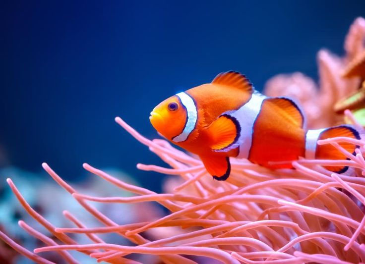
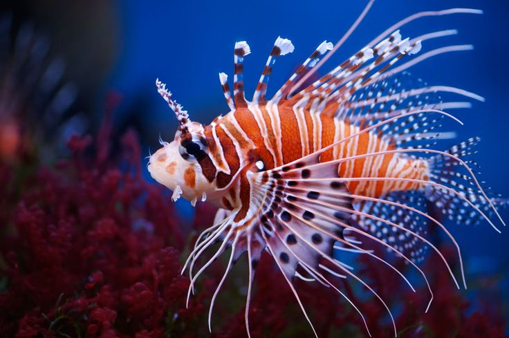
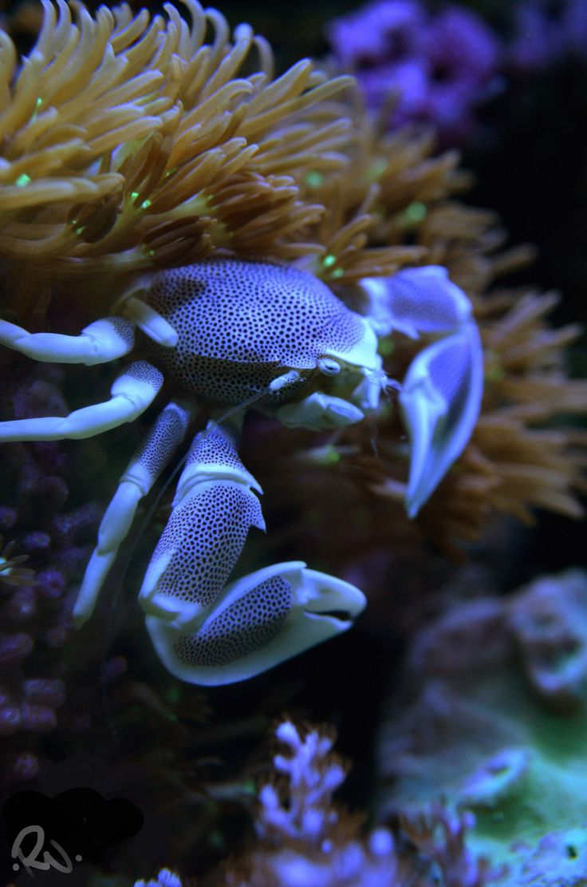
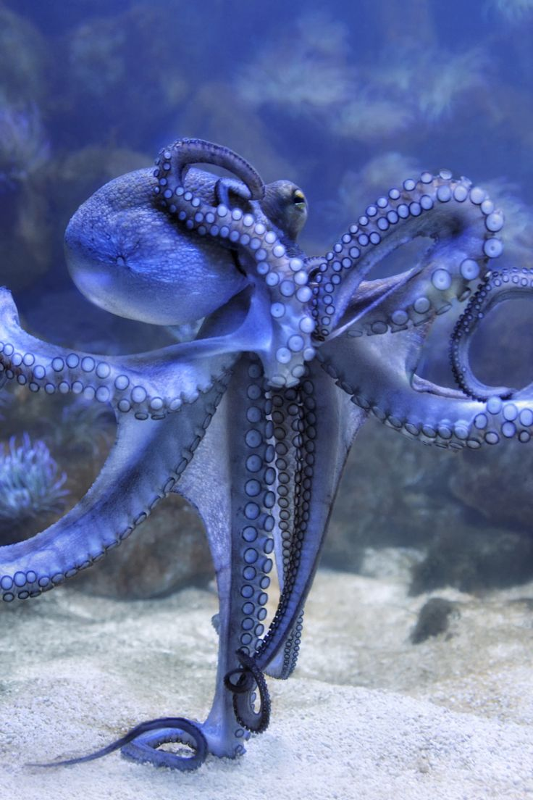
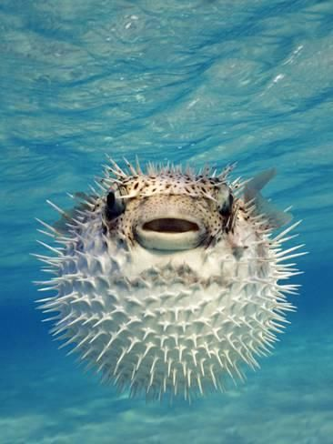

Species in the oceanarium
Here are some of species in the Ocean.

Common Clownfish
Common Clownfish
- Scientific name: Amphiprion ocellaris
- Native habitat: Endemic to the warmer water of Indian ocean, red sea, Pacific Ocean, Great barrier reef, Southeast Asia.
- Features: Stocky appearance & oval shaped. Orange color with 3 white bands outlined with black.
- Size: About 11 cm in length.
- Lifespan: Around 6-10 years .
- Diet: Algae, zooplankton, copepods.
- Behavior: Has a symbiotic relationship with sea anemones; highly territorial & exhibit playful behaviors.
- Breeding: Females lay eggs on flat surfaces near their host anemone; males guard and cares the eggs until they hatch.
- Conservation status: Least concern

Red Lionfish
Red Lionfish
- Scientific name: Pterois volitans
- Native habitat: Native to Indo-Pacific region.
- Features: Clad in white stripes alternated with red, maroon or brown stripes.
- Size: About 47 cm length.
- Lifespan: Around 10 years.
- Diet: Small fish, insects.
- Behavior: Generally solitary; ambush predators.
- Breeding: Can lay up to 30,000 eggs; Females release eggs into water which fertilized externally.
- Conservation status: Least Concern

Common Starfish
Common Starfish
- Scientific name: Asterias rubens
- Native habitat: Native to north-east Atlantic Ocean.
- Features: Orange or brownish in color; have 5 arms.
- Size: Generally, can grow up to 10-30 cm across.
- Lifespan: Around 7-8 years.
- Diet: Bivalve molluscs, polychaete worms, barnacles, gastropod molluscs, other echinoderms.
- Behavior: Move towards light.
- Breeding: Produce 2.5 million eggs; Females release eggs to water, males shed sperms and fertilisation takes place in the water.
- Conservation status: Least Concern

Tasmanian Giant Crab
Tasmanian Giant Crab
- Scientific name: Pseudocarcinus gigas
- Native habitat: Native to Southern Australia; Found on rocky & muddy bottoms in the oceans.
- Features: Mainly light-yellow below & red above; small ones have red spots above.
- Size: Generally, 46 cm body width.
- Lifespan: About 20-30 years.
- Diet: Carrion, slow-moving species.
- Behavior: Can be appears in 10-18 C temperature; long-lived & slow-growing.
- Breeding: Females carry 0.5-2 million eggs for 4 months.

Tiger tail seahorse
Tiger tail seahorse
- Scientific name: Hippocampus comes
- Native habitat: Native to Western Central Pacific; Found in subtidal aquatic beds, coral reefs.
- Features: Alternating yellow and black pattern; doesn’t has scales.
- Size: Maximum size 18.7 cm.
- Lifespan: Around 1.5 years.
- Diet: Small fish, coral, small shrimp, plankton.
- Behavior: Swim upright, rather than horizontally.
- Breeding: Males carry eggs in a brood pouch on their chest that holds about 2000 eggs; pregnancy period is 1-4 weeks.
- Conservation status: Vulnerable

Common Octopus
Common Octopus
- Scientific name: Octopus vulgarius
- Native habitat: Range from eastern Atlantic to southern coast of South Africa; prefer shallow, rocky coastal waters.
- Features: Bulbous head; Large eyes; Eight long flexible arms lined with suckers.
- Size: Grow up to 10 inches in mantle length; with arms up to 1 m long.
- Lifespan: Generally, 1-5 years.
- Diet: Crabs, fish, molluscs.
- Behavior: An intelligent species.
- Breeding: Females lay thousands of eggs & guards until hatching.
- Conservation status: Least Concern

Pacific Sea Nettle
Pacific Sea Nettle
- Scientific name: Chrysaora fuscescens
- Native habitat: Lives in northeastern Pacific Ocean.
- Features: Golden-brown bell with reddish tint; whitish oral arms.
- Size: The bell can grow up to 0.5-1 m long; oral arms may trail about 4.6 m behind the nettle.
- Lifespan: Generally, 6-12 months.
- Diet: Zooplankton, crustaceans, salps, pelagic snails, small fish, other jelly fish.
- Behavior: Swim using jet propulsion; Use light sensing organs called ocelli.
- Breeding: Capable for both sexual and asexual reproduction.
- Conservation status: Vulnerable

Great white Shark
Great white Shark
- Scientific name: Carcharodon carcharias
- Native habitat: Lives in all coastal and offshore waters that have water temperature 12-24 C.
- Features: Torpedo-shaped body; sharp teeth.
- Size: Around 3-5 m length.
- Lifespan: More than 70 years.
- Diet: Fish, cetaceans, pinnipeds, squid, sea turtles, sea otters, seabirds.
- Behavior: Tend to separate & resolve when hunting.
- Breeding: Pregnancy period 11 months.
- Conservation status: Vulnerable

Reef Manta Ray
Reef Manta Ray
- Scientific name: Mobula alfredi
- Native habitat: Found in tropical and subtropical Indo-Pacific region.
- Features: Dorsoventrally flattened & large triangular fins; midnight blue in color with scattered whitish –greyish areas on head.
- Size: Can grow up to 3-5 m.
- Lifespan: About 50 years.
- Diet: Zooplankton
- Behavior: May escape an attack by leaving it with a part of the wing missing.
- Conservation status: Vulnerable

White-Spotted Pufferfish
White-Spotted Pufferfish
- Scientific name: Arothron hispidus
- Native habitat: Lives in Indo-Pacific region, red sea; found in reefs, lagoons, estuaries, tidepools.
- Features: Greyish or yellowish color and covered with white spots.
- Size: Around 50 cm length.
- Diet: Coralline algae, molluscs, tunicates, sponges, corals, crabs, urchins, etc.
- Behavior: Nocturnal & solitary; territorial.
- Conservation status: Least Concern

Snowflake moray
Snowflake moray
- Scientific name: Echidna nebulosa
- Native habitat: Lives in Indo-Pacific region, central pacific are. found in seagrass beds, rocky shallows, reef flats, tide pools.
- Features: Blunt white snout, yellowish, brown & black striped pattern.
- Size: Around 0.5-1 m length.
- Lifespan: About 15 years.
- Diet: Crustaceans, Starfish, sea urchins.
- Behavior: Poor eye sight.
- Conservation status: Least Concern